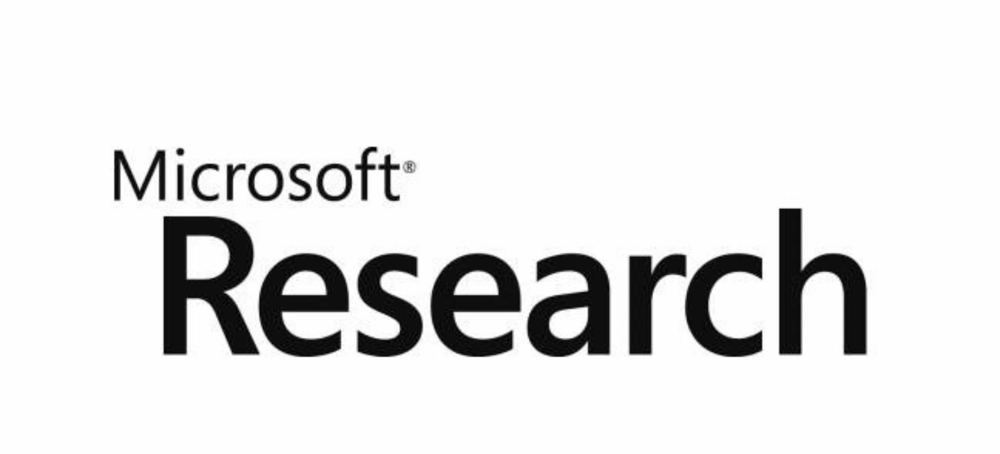
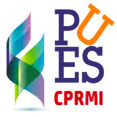

Manish Shetty
Research Fellow, Microsoft Research India
Research Experience
| Aug 2020 - Present |
Research Fellow, Microsoft Research (India) working on AIOps Advisors: Chetan Bansal, Dr. Nachi Nagappan, Dr. Tom Zimmermann |
| Jan 2020 - Jun 2020 |
Research Intern, Microsoft Research (India) worked with Chetan Bansal on creating and developing SoftNER. Featured on VentureBeat! - here |
| Jul 2019 - Jun 2020 |
Research Assistant, Center for Pattern Recognition, PES University worked with
Dr. Gowri Srinivasa on ML powered drug discovery at
PESU-CPR
|
| Jun 2019 - Aug 2019 |
Machine Learning Research Intern, Deloitte worked on ML/NLP assisted Risk Advisory for the Cyber-Risk team
|
| Jun 2018 - Feb 2019 |
Research Intern, Center for Cloud Computing and Big Data, PES University worked with
Phalachandra HL on intelligent VM provisioning algorithms
|
Biography
Welcome to the mirror-land of my life and activities. Here is a little something about myself. I associate my understanding of the world to the creative, robust, and innovative ideas I capture with my inbuilt wide lens camera called “The Eye” 😉. I love theoretical physics, space programs, plant and animal scientific names and the twists & turns of nature. When I am not working, I like to relax & enjoy taking pictures of skies.
I'm a currently a Research Fellow at Microsoft Research where I work with researchers like Chetan Bansal, Dr. Nachi Nagappan, Dr. Tom Zimmermann. Previously, I graduated with a B.Tech(Hons.) in Computer Science and Engineering from PES University, Bangalore, India in 2020. I was advised by Dr. Gowri Srinivasa on my bachelor thesis.
Research Interests
My core interest lies broadly in Natural Language Processing (NLP) and Deep Learning.
I'm currently working on using AI/NLP/DL methods to solve real-world problems, e.g. systems/agents/models for AI-assisted Software Engineering and healthcare.
As humans we have the ability to learn new concepts, ideas, and skills quickly and effectively. We use our learnings from one task to learn decisions for others. We also effectively process noisy and complex real-world stimuli. A long term goal of my research is to build AI systems that can do the same. Some interesting research domains that revolve around this and I'd like to explore are:
-
Meta Learning- Learning to Learn [working on it right now! 🤩] -
Neuro-Science + AI- Modelling how the brain solves challenges ↔ Better AI algorithms. -
Robust ML- Modelling for low resource/ long tailed data
Some other concepts that pique my interest are - Bayesian Inference, Multi-task learning,
Data driven systems, and ML Theory
If you'd like to collaborate, chat with me about AI, or just know about research in general, feel free to drop me an email.
- [Dec '20] Happy Holidays!☃️ Not taking a winter break this year though ( 😱) since I'm working on multiple papers due early in 2021!
- [Nov '20] I enjoyed attending ESEC/FSE 2020 and meeting the SE community!
- [Oct '20] Started work on a new project! Hands on with meta-learning and few-shot learning!
- [Oct '20] Our new preprint Check it out!
- [Jul '20] Our paper featured in VentureBeat! Check it out!
- [Jun '20] Filed my first patent - "Automatic Recognition of Entities Related to Cloud Incidents"!
-
 ResumeRise: An NLP tool which classifies and summarizes resumes
ResumeRise: An NLP tool which classifies and summarizes resumes
-
Offensive Text Detection using NLP
-
CANN: Artificial Neural Network Library for C built from scratch & comparisons with Keras
-
Kennel: The Automated Pet Feeder using IoT (IoT Device)
[Code] [Documentation]
-
WhatsEpoch: A WhatsApp notification client for large model training (Tool)
[Code] [Documentation]
-
SpotiFetch: Download any Spotify playlist to local Music folder as mp3 (PS: mp3 rocks!) (Tool)
[Code] [Documentation]
-
CloudSimExtensions: Improved cloud provisioning algorithms for the famous CloudSim engine (Tool)
[Code] [Documentation]
Current Affiliations

